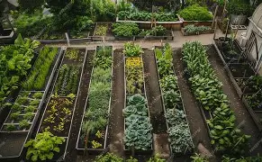

GreenSprout
Home
About
Products
Gallery
Resources
Contact
Resources & Events
Guides & Tutorials
Soil Preparation PDF
gardeners
Upcoming Workshops
Sep 12, 2025 – Composting Basics
Oct 05, 2025 – School Garden Build Day
Nov 15, 2025 – Water-saving Gardening